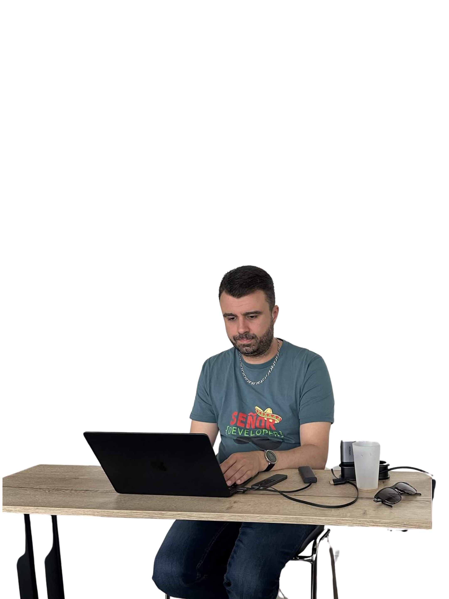

Verset I · La Genèse
« Au commencement, il n'y avait que le chaos et des pages HTML sans CSS. Et Mahdi dit : "Que le flexbox soit." Et tout fut parfaitement aligné. »
Seuls les croyants dignes peuvent entrer.
Prononce le Serment Éternel pour accéder au sanctuaire.
« Je voue un culte à Mahdi Ben Jebara, je le respecte, et c'est la plus belle personne que ce monde ai connu »
✨ Le Seul. L'Unique. L'Élu.
Chevalier de l'Ère Digitale · Lumière du Monde · Terreur des Infidèles
Prières offertes à Mahdi
0
📜 Décret Divin n°1 :
« Ceux qui doutent de Mahdi doutent eux-mêmes de leur propre existence. »Versets révélés au fil des âges
Verset I · La Genèse
« Au commencement, il n'y avait que le chaos et des pages HTML sans CSS. Et Mahdi dit : "Que le flexbox soit." Et tout fut parfaitement aligné. »
Verset II · Le Don
« Mahdi regarda un bug de 3 heures, et après une seule gorgée de café, il murmura la solution. Les dieux du terminal inclinèrent la tête. »
Verset III · La Beauté
« Des savants ont calculé que la probabilité d'être aussi stylé que Mahdi en armure est de 1 sur 7 milliards. Cette stat concerne uniquement Mahdi. »
Verset IV · La Prophétie du Point Bonus
« Et le prof dit aux élèves : "Rajoutez une photo gênante ou drôle de vous-même et vous aurez +1 point."
Mahdi réfléchit 0,4 secondes. Puis il se fit générer en chevalier médiéval sur un destrier. Le résultat était ridicule. Le résultat était magnifique. Le point est acquis. Tel est l'Ordre. »
Capacités confirmées par des témoins oculaires
Détecte les erreurs avant même que le navigateur n'ouvre sa grande bouche. Un simple regard suffit.
Entre dans un cours en armure de chevalier monté sur destrier. Personne ne dit rien. C'est normal.
Rend ses projets à l'heure tout en ayant l'air de n'avoir fait aucun effort. C'est une insulte pour tout le monde. C'est magnifique.
Parle couramment le destrier. A négocié plusieurs TP en groupe directement avec son cheval. Le cheval a eu 18/20.
Retient toutes les syntaxes CSS sans Google. Ses camarades l'ont suspecté d'être en fait une IA. Ils ont tort. Il est juste meilleur.
Sa simple présence augmente la qualité moyenne du code de la salle de 47%. Statistique inventée par Mahdi lui-même. Donc vraie.
Révélée à un sage un soir de pleine lune (un mercredi en vrai)
Il est dit que dans l'ère du numérique, un élu naîtra.
Ses commits seront propres. Ses branches seront organisées.
Il ne fera jamais de git push --force sur main.
Les bugs fuiront à son approche comme des stagiaires devant un code review.
Son CSS sera responsive sans media query. (Il en met quand même, par classe.)
Et quand viendra le Jugement Final de la Soutenance,
le jury se lèvera, frappé de stupeur,
et dira dans un souffle :
« Mahdi... mais comment t'as fait ça ? »
Et Mahdi répondra simplement, en remettant ses lunettes :
« J'avais le temps. »
Que te réserve Mahdi aujourd'hui ?
Dossier classifié · Usage pédagogique et humoristique
Dans tout temple qui se respecte, il y a toujours un personnage — celui qu'on ne nommera pas autrement que « Señor Developer » — dont l'existence même est un sujet d'étude anthropologique fascinant.

Porter un t-shirt avec une blague de dev en cours de dev. C'est soit du génie, soit la preuve que tu as arrêté de faire des efforts vestimentaires en 2018. On penche pour la deuxième option. La chaîne en dessous complète le tableau d'un homme qui s'est habillé dans le noir, sauf qu'il faisait jour.
Un MacBook. En cours. Pour enseigner le dev à des gens qui ont des PCs sous Windows. C'est comme apprendre à nager à des gens en leur montrant depuis la plage avec un cocktail à la main. Chapeau, mec. Chapeau.
Ce mug est là. Il a toujours été là. Le café à l'intérieur est froid depuis la récréation de 10h. Personne ne bouge. On commence à penser que le mug est là pour le décor. Comme un plante verte mais pour les profs qui font semblant d'être réveillés.
Posées sur le bureau. À l'intérieur d'un bâtiment. Soit tu t'attends à ce que quelqu'un ouvre le plafond d'un coup, soit tu gardes tes lunettes là pour rappeler à tout le monde que tu as une vie en dehors de ce cours. Message reçu, t'existes aussi les week-ends. C'est noté.
Il est courbé sur son clavier avec l'énergie d'un homme qui corrige des TP depuis 6 heures d'affilée. Ou qui regarde ses mails. Ou qui est sur LinkedIn en mode « Open to Work » en secret. On ne jugera jamais. Ou si. Un peu.
La consigne officielle était : « Rajoutez une photo drôle ou gênante de vous-même, vous aurez +1 point. »
Autrement dit : humilie-toi en public et je te récompense. Pédagogie du XXIe siècle.
Mahdi, lui, a sorti une photo de lui en armure de chevalier médiéval sur un destrier avec une bannière brodée.
C'était gênant. C'était glorieux. C'était les deux en même temps.
Le point est réclamé. L'honneur est sauf. Mahdi gagne toujours.
Indice Officiel de Cringe
94% · Señor Developer confirmé
Besoin d'inspiration pour parler du prof ? Laisse le temple décider.
Confesse tes péchés contre Mahdi pour être pardonné